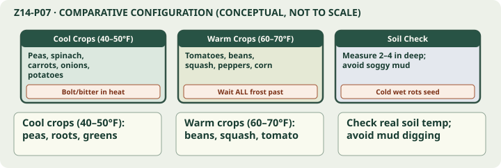

Z14-P07 · Food production and preservation · New manuscript
Separate cool-season frost-hardy crops from warm-season tender crops
Prevent spring frost wipeouts and summer bolting by planting every crop in its proper soil-temperature window.
When it applies · Spring planting schedules across Minnesota and northern climates.
Equipment · Simple soil thermometer, local frost-date chart, and crop planting list.

Actions
- Plant hardy cool-season crops (peas, spinach, radishes, carrots, onions, cabbage, broccoli, potatoes) early in spring once soil thaws and reaches roughly 40–50°F—these tolerate light spring frosts and actually grow bitter or bolt in mid-summer heat.[P01]
- Hold frost-tender warm-season crops (tomatoes, peppers, bush/pole beans, sweet corn, cucumbers, winter squash, basil) strictly until ALL danger of killing frost has passed AND soil warms to 60–70°F.[P01]
- Check real soil temperature 2 to 4 inches deep with a soil thermometer rather than guessing from one warm April afternoon—cold wet soil rots bean and squash seeds before they sprout.[P01]
Failure recognition · Setting out tomato and squash transplants during a warm 72°F week in early May in Minnesota, then watching a 27°F frost kill every plant overnight.[P01]
Verify · Confirm soil temperatures match crop group (40–50°F cool vs 60–70°F warm) and frost forecast is clear before transplanting tender crops.[P01]
Stop or change course · Cold waterlogged soil (clumps tightly when squeezed) halts digging and seeding until beds drain to crumbly moisture.[P01, P02]
Evidence and editorial notes
- P01 · University of Minnesota Extension · Planting the Vegetable Garden (current web edition)
- Section: Site Selection, Sunlight, Frost Dates, and Short-Season Planning · Conditions: Home vegetable gardening in Upper Midwest / Minnesota (USDA Zones 3–5)
Support: Select a sunny well-drained garden site receiving 6–8+ hours of direct sunlight, match crop days-to-maturity to local last-spring and first-autumn frost dates, and separate cool-season crops from frost-sensitive warm-season crops.
Limitations: Microclimates, low frost pockets, and soil clay/sand composition shift local planting windows by weeks. · Conflicting evidence: None; anchors regional Minnesota growing-season realism.
Editorial note: Grounds Z14 regional food production and frost-window planning. · Specialist reviewer: Horticulture and university Extension specialist
Primary source · checked 2026-11-24 - P02 · University of Minnesota Extension · Planting the Vegetable Garden (current web edition)
- Section: Soil Preparation, Testing, Compost, and Safe Fertility · Conditions: Residential garden beds and small-acreage food plots
Support: Test garden soil through an accredited lab (e.g., UMN Soil Testing Lab) before heavy amending to determine pH, nutrients, and urban lead risk; incorporate finished compost and avoid applying raw animal manure immediately before harvesting edible crops.
Limitations: Urban soils near older painted buildings or roads may contain legacy lead requiring raised beds and clean soil barriers. · Conflicting evidence: None; links soil fertility to food-safety contamination prevention.
Editorial note: Separates safe composted soil building from pathogen/heavy-metal hazards. · Specialist reviewer: Soil science and Extension horticulture
Primary source · checked 2026-11-24
Source lineage · UMN Extension Planting the Vegetable Garden; new manuscript · Classification · New manuscript.